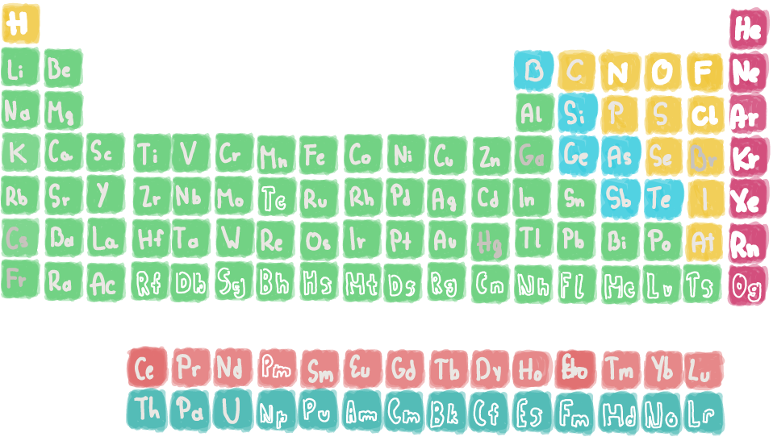

Ever wondered what is everything around you made of?
Because before we proceed with our cosmic adventure we have to know what the universe and everything in the universe is made of, right?
The matter in the Universe is made up primarily of quarks and leptons (neutrinos and electrons). Quarks make up protons and neutrons, which with electrons make up an atom. Atoms make molecules, which in turn make up everything else we see!

It might sound weird how this is but let me go step by step.
So everything is made out of quarks about which we talked about in the previous post.

Quarks make up protons, which have a positive charge and are attracted to electrons (negative charge), and neutrons, which don't have a charge.

Those three particles make up an atom. An atom consists of a nucleus made of ptorons and neutrons, and electrons which are evolving around the nucleus attracted to the protons. Electrons also form clouds called orbitals and they can switch from one orbital to another. Also there are as many electrons as protons.

The amount of protons in the nucleus determines the element of an atom. So hydrogen is an element and it has one proton thus it is the lightest element, while oganesson has 118 protons in it's nucleus thus the heaviest element. All the elements that exist were organized in 1869 by Dmitri Mendeleev into the periodic table. The elements were organized into Metals, Non-metals, Gases and Metalloids, and each of them was classified as a Solid, Liquid, Gaseous or Artificial.
If we group elements toghether we get molecules. The molecule is kept toghether thanks to Valence Electrons that they lose, gain or share. By grouping molecules we get water, sugar, cells, wood ...

This book helped me understand and write this blog post:
My first book of quantum physics Sheddad Kaid-Salah Ferró & Eduard Altarriba, Button Books, 2018.